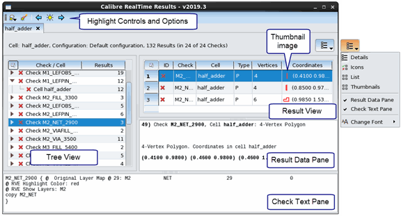

Viewing Results in the Calibre RealTime Results Window
Prerequisites
You are using Calibre RealTime with Cadence Virtuoso, Synopsys Custom Compiler, or Synopsys Laker and have completed a Calibre RealTime run. See one of the following:
(Optional) A Check Text Override File to specify highlight colors and layers; see “Specifying the Check Text Override (CTO) File in Calibre RealTime”.
A Calibre RVE license. See “License Timeout for Calibre RealTime Custom” for setting the license timeout period.
Enable “Launch RealTime results viewer automatically” at the top of the Calibre RealTime Options dialog box to have the Calibre RealTime Results Window open automatically after a run.
Video
The video “How to Review Calibre RealTime DRC Results” demonstrates basic procedures in reviewing results using the Calibre RealTime results viewer.
Procedure
- Click the
 toolbar
icon to open the Calibre RealTime Results window if it did not open
automatically.
toolbar
icon to open the Calibre RealTime Results window if it did not open
automatically. The results are shown in a window that is similar to Calibre RVE for DRC. Results from different cells are shown in different result tabs. If you are using multiple Run Configurations, results from different configurations are displayed in different result tabs.
